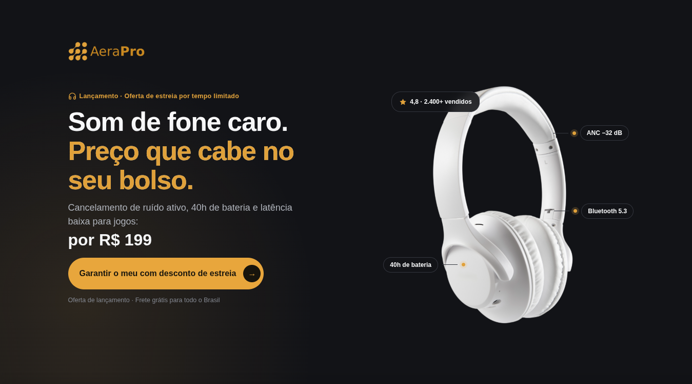

Landing Pages para E-commerces
Página feita só para o seu anúncio. Sem menu, sem distração,
sem catálogo — uma oferta, um caminho, uma decisão.
É a diferença entre pagar por clique e receber por venda.
Produto único · Promoção · Linha completa
Foco total
uma oferta, uma ação — sem vazamento de atenção